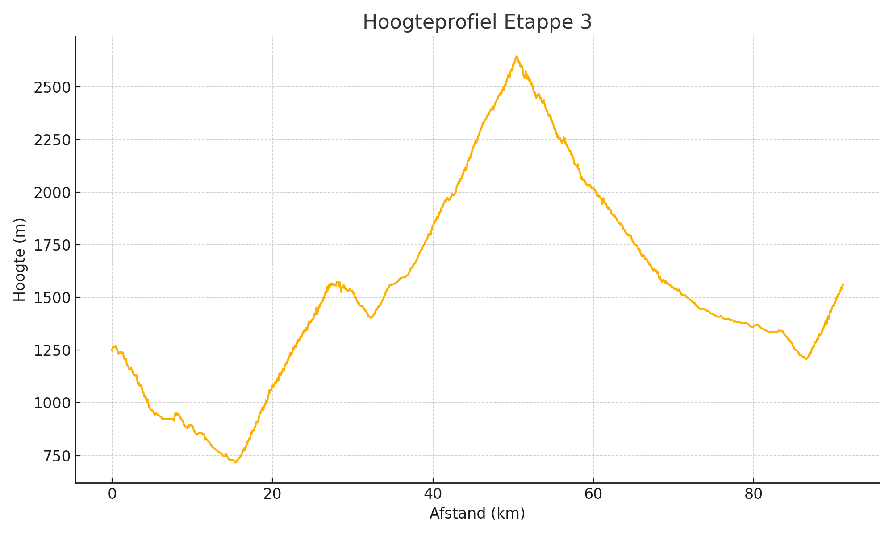

Top van de Col: Col du Télégraphe

Details
Chauffeur: Niels
Adres hotel: 3 chemin des Blés, Puy-Saint-Pierre, Frankrijk
Voorbeschouwing - kort
Etappe 3 is een dubbele klimklassieker: eerst de 12 km naar de Col du Télégraphe, gevolgd door de epische 17,7 km naar de Col du Galibier, technische afdalingen en een verraderlijke finale in Briançon – een dag van hoogte, adem en stuurmanskunst.
Basisgegevens
| Afstand (km) | Klim (m) |
|---|---|
| 91 | 2577 |
Hoogteprofiel
Klimprofiel

Voorbeschouwing Etappe 3
Etappe 3 van Modane naar Briançon is een episch klimspektakel over de Col du Télégraphe en de Col du Galibier – twee mythische reuzen in één dag. Direct na de start kronkelt de weg de vallei uit richting Saint-Michel-de-Maurienne, waar het peloton zich moet voorbereiden op de eerste test: een glibberige aanloop door smalle tunnels en rotsachtige zijkanten, waar een lekke band of onoplettend stuurgedrag al voor het echte werk kan uitschakelen.
De klim naar de Col du Télégraphe is 12 km à 7 %: een alpinistische opname van pure wilskracht. Op de steilste stukken, net voorbij Valloire, kan een scherpe versnelling net buiten de bocht al een breuk in het peloton forceren. Renners die hier met een souplesse als rivierwater omhoog trappen, kunnen rivale kopmannen in de portemonnee laten kijken en vroege gaten slaan.
De daaropvolgende afdaling is een technische oase: haarspeld na haarspeld, elk ingesneden in eeuwenoude rotsen. Wie durft in te drukken en de juiste lijn kiest, pakt hier seconden; wie te voorzichtig is, verliest ritme. Een scherpe bocht door Saint-Michel kan verraderlijk zijn als de banden nog afkoelen, dus koelbloedigheid is geboden.
Bij Valloire begint het zenit van de dag: 17,7 km klim naar de Col du Galibier, gemiddeld 6,9 %, met passages boven de 2600 m hoogte. Hier verandert zuurstof in een kostbare valuta, en elke pedaalslag moet zorgvuldig worden afgedekt. In de eindeloze haarspeldbocht bij het dorpje Plan Lachat kan een gedoseerde demarrage – juist voor de windvlagen invallen – een kleine elitegroep vormen.
Boven op de Galibier wacht een alpiene hoogvlakte met ijzige windstoten en scherpe sneeuwresten. Renners moeten hier alert blijven voor ijzige gripverlies op de scherpe stenen. De afdaling naar Briançon is lang en bedrieglijk glad: 18 km vol onvoorspelbare bochten, waar stuurmanskunst en rembeheer het verschil maken tussen uitschakeling en glorie.
In de straten van Briançon, omgeven door middeleeuwse vestingmuren, bepaalt positionering in de krappe bochten de eindsprint. Net voor de finish ligt een kort, steil muurtje in het stadspark – perfect voor een puncher om onverwacht weg te snellen. Wie daar moeiteloos naar boven snelt, kan de dag in stijl afsluiten.